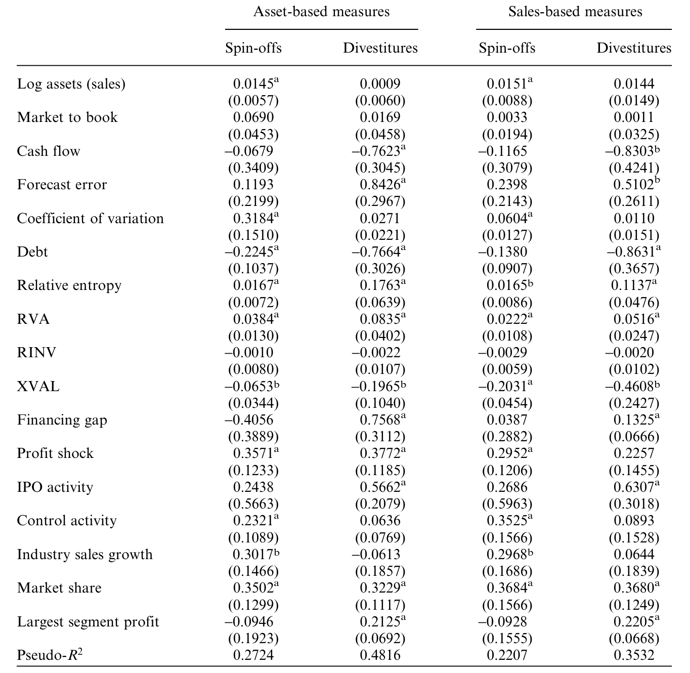
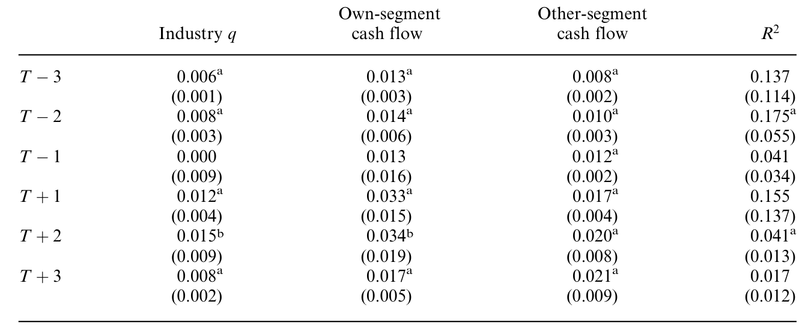
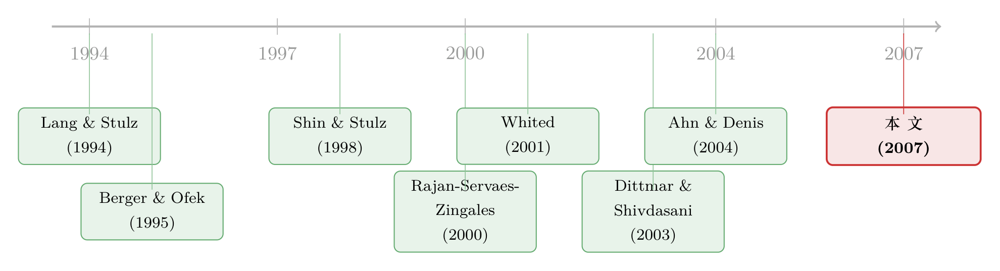

拆分真能让公司投得更聪明吗？——一个被「测量误差」和「内生性」一起推翻的流行结论
本文读的是 Çolak & Whited (2007, Review of Financial Studies)：当一家多元化巨头把某个部门「拆分上市」(spin-off) 或「卖掉」(divestiture)，过去的文献几乎一致地发现，它剩下来的投资变得更有效率了。本文的核心结论却是——这种「变好」只是相关，不是因果。一旦同时校正两件事：(1) 决定拆分的公司本来就和别人不一样（内生性），(2) 衡量效率所用的 Tobin's q 本身是把很烂的尺子（测量误差），那个漂亮的「拆分提升效率」就消失得无影无踪。
1 一个太顺理成章的故事
先讲一个几乎人人都信的故事。
上世纪八九十年代，公司金融领域最热闹的发现之一，是所谓的 多元化折价 (diversification discount)：Lang and Stulz (1994) 和 Berger and Ofek (1995) 先后指出，一家横跨多个行业的「联合大企业」(conglomerate)，其市值往往低于「把它各个部门当成独立的纯业务公司、再加总起来」的那个组合。换句话说，把鸡蛋放进同一个篮子，市场反而要打个折。
这个折价从哪来？最流行的解释，是公司内部那个看不见的「资本市场」出了问题。Lamont (1997)、Shin and Stulz (1998) 都给出了支持性的证据：在一家联合企业里，钱不是按「哪个部门机会最好就投哪里」来分配的，而是被总部「劫富济贫」地搬来搬去，烟草部门的现金流被拿去补贴亏损的化工部门。投资的钱配错了地方，公司自然就值不了那么多。（关于多元化折价里被忽略的另一条暗线，可参见《捆在一起发债：多元化折价里，被忽略的那条「竞争」暗线》。）
顺着这个逻辑往下走，一个自然的推论就出现了：如果折价真的源于乱投资，那么当公司「瘦身」——把一个部门拆出去单飞，或者干脆卖掉——它的投资效率就应该提高。而这正是后来一连串论文报告的结果。Gertner, Powers, and Scharfstein (2002)、Ahn and Denis (2004) 发现，spin-off 之后，分部投资对投资机会的敏感度上升了；Dittmar and Shivdasani (2003) 发现，divestiture 之后，那个衡量内部资本市场效率的关键系数显著变大了。Burch and Nanda (2003) 也在同一方向上添了一笔。
故事讲到这里，闭环了：折价来自低效投资，拆分能修好低效投资，所以低效投资确实是折价的根源。逻辑严丝合缝，证据言之凿凿。
但凡一个结论太顺、太符合直觉、且所有人都得到同一个符号，就值得停下来问一句：我们到底是在观测因果，还是在观测一个被两个统计学幽灵联手制造出来的幻觉？
2 两个幽灵
Çolak and Whited (2007) 这篇文章，干的就是请幽灵出场的活儿。它没有提出新的效率度量，也没有否认「拆分之后效率数字确实变好了」这个事实。它质疑的是这条因果链最脆弱的一环：变好 ≠ 拆分造成了变好。它指出，前人的发现可能被两个问题污染了。
第一个幽灵：内生性 (endogeneity)。 公司不是被随机抽中去做拆分的。会拆分的公司，本来就和不拆分的公司系统性地不同。本文用一个 probit 回归做第一步，把「是否 refocus」对一组可观测变量回归，结果非常清楚：决定拆分的公司，更大、更多元化、信息不对称问题更严重；它们更多处在增长快、IPO 和并购活动密集的行业里；而且它们往往刚刚经历过一次意料之外的利润冲击。

Table 2: shows that several of these marginal effects are significant. Of
既然这些公司一开始就不一样，那「拆分后效率变好」就完全可能是这些事前差异自己演化出来的结果，而不是拆分这个动作带来的。比如，一家刚刚被负向利润冲击打了一巴掌的公司，无论它拆不拆分，接下来都可能向均值回归、投资行为趋于正常——你只是恰好观测到它在拆分的同时变好了而已。
第二个幽灵：测量误差 (measurement error)。 这个更隐蔽，也更要命。所有衡量投资效率的方法，本质上都是在看「投资对投资机会的反应有多灵敏」。可是「投资机会」是看不见的，文献里通用的代理变量是 Tobin's q。问题在于，q 是一把很烂的尺子：Erickson and Whited (2000) 和 Whited (2001) 估计，真实的、不可观测的投资机会，只能解释观测到的 Tobin's q 中 20%–40% 的变异。剩下的六七成，全是噪声。
把这两件事连起来看，本文真正的贡献就浮现了：它不是用一个新数据去推翻旧结论，而是用两套计量工具，分别把这两个幽灵从结果里减掉，然后看那个「拆分提升效率」还剩下多少。答案是：几乎什么都不剩。
3 识别策略一：把「拆分」当成一种「治疗」
先对付内生性。
本文一个很漂亮的类比是：把拆分看成劳动经济学里的 职业培训 (training program)。工人是自己选择去参加培训的，正如公司是自己选择去拆分的；你不能简单地把「参加培训的人后来工资高」直接当成培训的功劳，因为愿意去培训的人本来就更上进。计量经济学早就为这类问题准备好了武器——平均处理效应 (average treatment effect) 的估计。
在这套语言里，「治疗」(treatment) 就是一次 spin-off 或 divestiture。我们真正想知道的，是对接受治疗的群体而言的平均处理效应 (ATT)：
$$\tau_{ATT} = \mathbb{E}\big[\,Y_i(1) - Y_i(0)\,\big|\,D_i = 1\,\big]$$
这里 \(D_i=1\) 表示公司 \(i\) 拆分了，\(Y_i(1)\) 是它拆分后的投资效率，\(Y_i(0)\) 是它假如不拆分时本该有的效率。问题的根子一目了然：对一家真的拆分了的公司，\(Y_i(0)\) 是个反事实，我们永远观测不到。
怎么办？匹配 (matching)。它的逻辑是：如果在一组可观测的控制变量 \(X\) 之下，是否接受治疗近似随机，那么我就为每家拆分的公司，找一批 \(X\) 极为相似、但没有拆分的「对照」公司，用它们的效率来填补那个看不见的 \(Y_i(0)\)。本文用的不是普通匹配，而是 Abadie and Imbens (2006) 新提出的 带偏差校正的匹配估计量 (bias-corrected matching estimator)。它的好处在于，简单匹配在治疗组和对照组「长得不够像」（控制变量分布重叠不充分）时会有渐近偏差，而这套估计量恰恰修正了这个偏差。
第一步那个 probit（即上面的表 2）正是为匹配服务的：它告诉我们，到底该拿哪些变量去匹配，才能让对照组真正可比。
那么校正之后呢？结论干脆利落：
spin-off 和 divestiture 确实伴随着投资效率的改善，但它们并没有造成这些改善。
而且这个结论很稳健——本文又换了两种更传统的内生性药方来交叉验证：Heckman (1979) 的样本选择校正，以及 Dehejia and Wahba (1999, 2002) 那种基于倾向得分 (propensity score) 的匹配。三条路，殊途同归。
（这种「公司事件本身是被选出来的、于是事后表现不能简单归因于事件」的思路，和《为什么「上市后跌跌不休」可能是一道算术题？》里讲的是同一种警惕。）
4 识别策略二：被 Tobin's q 污染的那把尺子
内生性处理完了，第二个幽灵还在。这一节是全文计量上的「心脏」，值得把数学一步步摊开。
设想最经典的投资—q 回归。真实模型里，投资 \(I\) 取决于真实但不可观测的投资机会 \(q\)：
$$I = \alpha + \beta\,q + u$$
可惜我们手里只有一个带噪声的代理 \(q^{*}\)，它等于真实的 \(q\) 加上一个测量误差 \(\varepsilon\)：
$$q^{*} = q + \varepsilon$$
当你拿 \(q^{*}\) 去跑 OLS，估出来的斜率并不收敛到 \(\beta\)，而是被衰减 (attenuation) 了。具体地：
现在，把这条不起眼的等式和「拆分」放在一起，魔鬼就出来了。
衡量效率的人，看的是 \(\hat\beta_{OLS}\)（投资对 q 的敏感度）在拆分前后有没有变大。可这条等式告诉我们：\(\hat\beta_{OLS}\) 等于 \(\tau^2 \cdot \beta\)。即便真实的效率 \(\beta\) 一动不动，只要代理质量 \(\tau^2\) 在拆分前后变了，估出来的敏感度就会变。
而 \(\tau^2\) 在拆分前后几乎一定会变。原因 Maksimovic and Phillips (2002) 早就点破了：一个部门嵌在联合企业里时，它的资产生产率会受到整个集团的牵连，行业中位数 q 给它当代理就特别不准；可一旦这个部门独立成一家单一业务公司，行业中位数 q 立刻变成一个好得多的代理——\(\tau^2\) 上升，衰减减轻，\(\hat\beta_{OLS}\) 自动变大。
于是「拆分后投资对 q 更敏感」这个被反复报告的发现，可能根本不是效率提高，而仅仅是尺子变准了。同样的把戏也作用在「其他部门现金流敏感度」这个度量上：现金流之所以显得显著，很大程度上是因为代理 q 没能抓住投资机会，而投资机会又恰好和现金流正相关——尺子的精度一变，系数就跟着变。
那正确的做法是什么？本文搬来了 Erickson and Whited (2002) 的 测量误差一致估计量（下称 EW 估计量）。它的巧妙之处在于：当回归变量含有测量误差时，普通的二阶矩（协方差）不够用，但高阶矩里还藏着能识别 \(\beta\) 的信息——只要真实 \(q\) 的分布不是正态的（有偏度、有峰度），就能用三阶、四阶矩把 \(\beta\) 和测量误差干净地分离开。这套思想可以一路追溯到 Geary (1942)。
把 EW 估计量用到 Shin and Stulz (1998) 那个经典的分部投资回归上——也就是把分部投资对行业 q、本部门现金流、以及其他部门现金流回归：
$$I_{j} = \beta_0 + \beta_1\,q_{j} + \beta_2\,CF_{j}^{\,own} + \beta_3\,CF_{j}^{\,other} + u_{j}$$
按 Shin-Stulz 的逻辑，如果内部资本市场是有效的，整个公司的现金流（其他部门现金流 \(CF^{other}\)）应该比本部门现金流更能驱动一个部门的投资，于是 \(\beta_3\) 应该很大；Dittmar and Shivdasani (2003) 正是发现 \(\beta_3\) 在 divestiture 之后显著上升。
可一旦改用 EW 估计量，结果就反转了：无论 divestiture 之前还是之后，本部门和其他部门现金流的系数都不再显著。也就是说，Dittmar-Shivdasani 那个「拆分后内部资本市场变得更有效」的关键系数，撑不过测量误差的校正。

Table 7: summarizes the results from estimating Equation (10) with
5 顺带一提：那两把「关联度」尺子也不太可靠
为了把话说全，本文还检视了 Rajan, Servaes, and Zingales (2000) 提出的两个基于关联度的效率度量：相对投资比率 (relative investment ratio, RINV) 和相对增加值 (relative value added, RVA)。它们衡量的是「投资是否更多地流向了高 q 的部门」。以 RVA 为例（销售加权版本）：
$$RVA_S = \sum_{j=1}^{n} w_j\,(q_j - \bar q)\left[\left(\frac{I_j}{S_j}\right) - \left(\frac{I}{S}\right)_j^{ss} - \sum_{i=1}^{n} w_i\!\left(\left(\frac{I_i}{S_i}\right) - \left(\frac{I}{S}\right)_i^{ss}\right)\right]$$
这里 \(w_j\) 是部门 \(j\) 占公司销售的比重，\(q_j\) 是该部门所在行业的中位数 q，\(\bar q\) 是各部门行业中位数 q 的销售加权平均，\((I/S)_j^{ss}\) 是同行业纯业务公司的中位投资—销售比。直观上，\(RVA_S\) 就是 q 与「行业及公司调整后的投资」之间的销售加权协方差——公司越是把钱投向高 q 的部门，它就越高。
本文用蒙特卡洛模拟去拷问这两把尺子：人为造出三类公司——「有效率的」(efficient)、「偏心的」(favoritist，把全部预算投给机会最差的部门) 和「平均主义的」(socialist，给每个部门平摊预算)，再看 RINV / RVA 能不能把它们排对序。结果令人沮丧：平均而言，这两个度量只有 65% 的概率能给出正确排序，而且部门数越少，排得越糟。原因也朴素——它们本质是「关联度」的度量，而关联度的估计精度随样本量上升；可一家公司才两到十个部门，样本量小得可怜，自然量不准。
换句话说，文献里这四把衡量效率的尺子，没有一把经得起认真推敲。
6 文献脉络
把这条线索从头捋一遍，会看得更清楚本文站在哪里。
起点是「多元化折价」这个经验事实：Lang and Stulz (1994)、Berger and Ofek (1995) 把它钉在了桌面上。接着，一批人为折价找原因，矛头指向内部资本市场的低效配置：Lamont (1997)、Shin and Stulz (1998) 给出支持证据，Rajan, Servaes, and Zingales (2000) 则贡献了 RINV/RVA 这两把度量，Scharfstein (1998) 贡献了投资—q 敏感度那把度量。然后，研究的重心从「横截面」转向「公司构成的变化」：Gertner, Powers, and Scharfstein (2002)、Dittmar and Shivdasani (2003)、Ahn and Denis (2004)、Burch and Nanda (2003) 一致地报告——拆分之后效率上升，反过来印证「低效投资是折价之源」。

但真正关键的反转，来自另一条平行的暗线。Whited (2001) 和 Chevalier (2004) 早就警告过：那些支持「内部资本市场低效」的证据，可能只是测量误差或内生性的产物。本文正是这条质疑线索的集大成者——它把 Abadie and Imbens (2006) 的处理效应估计量（治内生性）和 Erickson and Whited (2000, 2002) 的高阶矩估计量（治测量误差）这两件新武器同时搬上台，对前述所有效率发现做了一次系统的「祛魅」。
而它的结论之所以让人安心而非惊慌，还有一层经济学上的道理。正如 Villalonga (2004a) 所记录的，上世纪 90 年代初，美国上市公司里至少一半的经济活动发生在多元化的联合企业中。如果这些公司真的在系统性地乱投资，竞争的力量为什么没有逼着更多公司去拆分？毕竟每年发生的拆分，相比庞大的多元化公司存量，不过是九牛一毛。Maksimovic and Phillips (2000, 2002)、Bernardo and Chowdry (2002)、Gomes and Livdan (2004) 也都从理论与经验两端论证过：折价和那些看似低效的内部配置，完全可以由理性最大化行为来解释。本文的发现，与这一派「理性」视角严丝合缝。
7 评论与延伸（Q&A + 研究方向）
(a) 几个可能的疑问
Q：说「只是相关不是因果」，会不会只是检验功效不足——样本太小，把真效应估没了？
这是最该担心的一点，本文也确实建立在小样本上（154 个 spin-off、267 个 divestiture）。但作者的论证不是「估计不显著所以没效应」这么单薄：它给出了一个机制——拆分前后代理质量 \(\tau^2\) 必然变化，会系统性地把 \(\hat\beta\) 推高，这是方向明确的偏误而非随机噪声。再加上 Heckman、倾向得分匹配多法殊途同归，附录还做了蒙特卡洛验证估计量的有限样本表现，整体比单纯的「不显著」要扎实得多。
Q：内生性和测量误差，到底哪个是「真凶」？
两者都有份，但角色不同。内生性解释了「为什么拆分的公司事后看起来更好」（它们本来就是被冲击挑出来、注定要向均值回归的一批）；测量误差解释了「为什么效率数字会机械地变大」（尺子变准了）。本文的贡献正是把两者分别用对应工具减掉，而不是混为一谈。两个幽灵叠加，才制造出那个看似铁证如山的因果。
Q：EW 高阶矩估计量靠谱吗？它有什么前提？
它的核心前提是：真实的 \(q\) 分布非正态（有非零的偏度/峰度），否则高阶矩里没有可供识别的额外信息。对 Tobin's q 这种右偏、厚尾的变量，这个前提通常成立。代价是高阶矩估计量的有限样本表现可能不稳——这也正是本文要在附录里专门做蒙特卡洛去验证它的原因。
Q：那「拆分能创造价值」（超额收益、市场反应）的大量证据，是不是也被推翻了？
没有。本文针对的是投资效率这一条因果链，不是拆分的总价值效应。市场在公告日给拆分正向定价，可能来自税收、激励、信息释放、降低集团内部交叉补贴等很多渠道；本文只是说，「投资变得更有效率」不在这些渠道之列。Maxwell and Rao (2003)、Parrino (1997) 等还提醒，拆分里甚至存在向债权人的财富转移——价值的重新分配，不等于效率的提高。
Q：如果拆分不能提升效率，多元化折价又从何而来？
本文倾向于「折价未必源于低效投资」这一立场，并把读者引向理性派的解释（Maksimovic-Phillips、Gomes-Livdan 等）：多元化与内部配置的种种模式，可以是企业在各自约束下理性选择的结果。Villalonga (2004a) 甚至质疑「折价」本身是否稳健存在。换句话说，本文拆掉的不只是「拆分→效率」这一环，而是动摇了「折价=低效投资」这整条叙事。
Q：这套方法论，对今天读经验公司金融的人还有什么用？
极大。它给出一个可复制的模板：当你的因变量/自变量里含有噪声代理（Tobin's q、隐含波动率、情绪指标……），而你的处理又是公司自选的（发债、并购、回购、ESG 转型……），就该警惕你看到的「事件后变好」是不是这两个幽灵的合谋。先用处理效应/匹配处理自选择，再用测量误差一致估计处理代理噪声——缺一不可。
(b) 几个可能的研究问题与提案
1. 把这套「双重祛魅」搬到公司债市场的「拆分」上。 【经济故事】spin-off 会改变母公司的资产边界和杠杆，债权人财富可能被稀释（Maxwell and Rao, 2003）。但「拆分后信用利差变化」同样面临两个幽灵：会拆分的公司本就信用质量不同（内生性），而衡量违约风险常用的代理（如距离违约 DD）也含测量误差。 【可行性】中。数据可得（TRACE 债券成交 + Mergent FISD + Compustat 分部数据），识别上可直接复用 Abadie-Imbens 匹配 + EW 估计。难点是债券层面样本更稀、且要小心同一发行人多只债券的相关性。
2. 把「代理质量随事件变化」这一机制单独检验出来。 【经济故事】本文的关键论断是 \(\tau^2\) 在拆分前后会变。能不能直接估出 \(\tau^2\) 在事件前后的轨迹，证明它确实上升、且其上升幅度恰好能解释观测到的 \(\hat\beta\) 变化？这会把「机制」从推断变成可见的证据。 【可行性】高。EW 估计量本身就能输出 \(\tau^2\)（即 \(R^2\) 度量）。把样本按事件前/后分窗口分别估计 \(\tau^2\) 即可，纯属对现有方法的再利用。
3. 外资持有人是否会系统性地推动「无效拆分」？ 【经济故事】不同类型的股东（积极主义基金、外国机构）对「聚焦」(refocus) 的偏好不同。若某类持有人系统性地施压拆分，而拆分并不提升效率，那这究竟是治理改善还是短视？ 【可行性】中。需要 13F + FactSet 持股数据匹配拆分事件，识别上可用持有人结构的外生变动（如指数纳入带来的被动持股）。挑战是要把「持有人偏好」与「公司本就该拆分」分开。
4. 在更大的现代样本上重估：机器学习能不能造一把更好的「投资机会」尺子？ 【经济故事】本文受困于 Tobin's q 的低质量。如果用更丰富的文本/基本面信息构造一个高 \(\tau^2\) 的投资机会代理，会不会让「拆分提升效率」重新显著——还是更彻底地把它埋葬？ 【可行性】中。数据充足（2000 年后样本远大于本文），但「更好的代理是否真的更好」本身需要 EW 式的质量检验来背书，否则只是换了把没人验过的尺子。
8 我的判断
本文的贡献，不在于发现了某个新事实，而在于摧毁了一个被广泛接受的旧事实，并且摧毁得很有方法论的美感：它精准地指认了两个幽灵，各自配了一件恰当的武器，然后让那个流行结论在校正之后自行蒸发。对任何做经验公司金融的人，这都是一堂关于「相关不是因果」的硬核示范课——尤其是它揭示的那个隐蔽机制：当你的代理变量精度本身会随处理而变化时，回归系数的变化可以纯粹是一种度量假象。这一点的杀伤力远超本文的具体语境。
对识别的担忧，我有两条。其一，匹配的全部可信度押在「在可观测的 \(X\) 之下治疗近似随机」这个条件独立假设上；而拆分这种重大决策，几乎必然受到不可观测的管理层私有信息驱动，匹配对这种选择在未观测变量上的情形无能为力——这是本文方法的天花板。其二，小样本（一两百个事件）叠加高阶矩估计量，使「不显著」既可能是真无效应，也可能是功效不足；作者用蒙特卡洛缓解了这一点，但读者仍应把结论理解为「没有证据表明有因果」，而非「证明了没有因果」。
后续我最想看到的，是把这套「处理效应 + 测量误差一致估计」的组合拳，搬到一个代理质量可以被直接、外生地改善的环境里去检验——例如用现代数据和更优的投资机会代理，去看 \(\hat\beta\) 的变化里到底有多少是 \(\tau^2\) 贡献的、多少是真实 \(\beta\) 贡献的。能把这两块拆开，这条二十年的公案才算真正了结。
参考文献
- Abadie, A., and G. W. Imbens (2006). Large Sample Properties of Matching Estimators for Average Treatment Effects. Econometrica 75(1), 235–267.
- Ahn, S., and D. J. Denis (2004). Internal Capital Markets and Investment Policy: Evidence from Corporate Spin-offs. Journal of Financial Economics 71(3), 489–516.
- Berger, P. G., and E. Ofek (1995). Diversification's Effect on Firm Value. Journal of Financial Economics 37(1), 39–65.
- Bernardo, A. E., and B. Chowdry (2002). Resources, Real Options, and Corporate Strategy. Journal of Financial Economics 63(2), 211–234.
- Burch, T. R., and V. Nanda (2003). Divisional Diversity and the Conglomerate Discount: Evidence from Spin-offs. Journal of Financial Economics 70(1), 69–98.
- Chevalier, J. (2004). What Do We Know About Cross-Subsidization? Evidence from Merging Firms. Advances in Economic Analysis & Policy 4(1), Article 3.
- Dehejia, R. H., and S. Wahba (1999). Causal Effects in Non-Experimental Studies: Re-Evaluating the Evaluation of Training Programs. Journal of the American Statistical Association 94(448), 1053–1062.
- Dittmar, A. K., and A. Shivdasani (2003). Divestitures and Divisional Investment Policies. Journal of Finance 58(6), 2711–2744.
- Erickson, T., and T. M. Whited (2000). Measurement Error and the Relationship Between Investment and q. Journal of Political Economy 108(5), 1027–1057.
- Erickson, T., and T. M. Whited (2002). Two-Step GMM Estimation of the Errors-in-Variables Model Using High-Order Moments. Econometric Theory 18(3), 776–799.
- Gertner, R., E. A. Powers, and D. S. Scharfstein (2002). Learning About Internal Capital Markets From Corporate Spin-offs. Journal of Finance 57(6), 2479–2506.
- Gomes, J. F., and D. Livdan (2004). Optimal Diversification: Reconciling Theory and Evidence. Journal of Finance 59(2), 507–535.
- Heckman, J. (1979). Sample Selection Bias As Specification Error. Econometrica 47(1), 153–161.
- Lamont, O. A. (1997). Cash Flow and Investment: Evidence from Internal Capital Markets. Journal of Finance 52(1), 83–109.
- Lang, L., and R. M. Stulz (1994). Tobin's q, Corporate Diversification, and Firm Performance. Journal of Political Economy 102(6), 1248–1280.
- Maksimovic, V., and G. M. Phillips (2002). Do Conglomerate Firms Allocate Resources Inefficiently Across Industries? Theory and Evidence. Journal of Finance 57(2), 721–767.
- Maxwell, W. F., and R. P. Rao (2003). Do Spin-offs Expropriate Wealth From Bondholders? Journal of Finance 58(5), 2087–2108.
- Rajan, R. G., H. Servaes, and L. Zingales (2000). The Diversification Discount and Inefficient Investment. Journal of Finance 55(1), 35–80.
- Scharfstein, D. S. (1998). The Dark Side of Internal Capital Markets II: Evidence from Diversified Conglomerates. Working paper, M.I.T.
- Shin, H. H., and R. M. Stulz (1998). Are Internal Capital Markets Efficient? Quarterly Journal of Economics 113(2), 531–552.
- Villalonga, B. (2004a). Diversification Discount or Premium? New Evidence from the Business Information Tracking Series. Journal of Finance 59(2), 479–506.
- Whited, T. M. (2001). Is it Inefficient Investment that Causes the Diversification Discount? Journal of Finance 56(5), 1667–1692.